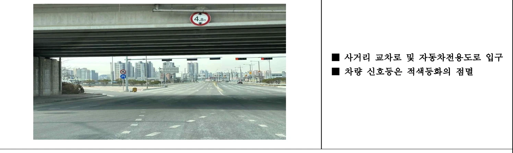

732. 照片中展示的交通安全设施和与此相关的解释中，不正确的两项是？

- ①车宽限制标志 – 限制超过标志牌上标明宽度的车辆通行（包括装载货物的宽度）
- ②两轮机动车及电动自行车禁止通行标志 - 禁止两轮机动车及电动自行车通行
- ③机动车专用道路标志 - 表明机动车专用道路或专用区域
- ④车辆信号灯（红闪灯）- 可以边注意其他交通或安全标志边缓慢行驶。
- ⑤中心线 - 安装区域右侧通行指示线
查看答案
答案
① 车宽限制标志 – 限制超过标志牌上标明宽度的车辆通行（包括装载货物的宽度）
④ 车辆信号灯（红闪灯）- 可以边注意其他交通或安全标志边缓慢行驶。
依据
车辆高度限制标志 - 限制超过标志所示高度（包括装载货物高度）的车辆通行（道路交通法施行规则[附录6]第221号）车辆交通信号灯中红灯闪烁的含义是，汽车和马在停车线或人行横道前临时停车后或在有停车线或人行横道的交叉路口前暂时停车后，可以在注意其他交通的同时继续行驶。 （道路交通法实施规则）[附录2]）。
依据文字为学习用机器翻译。